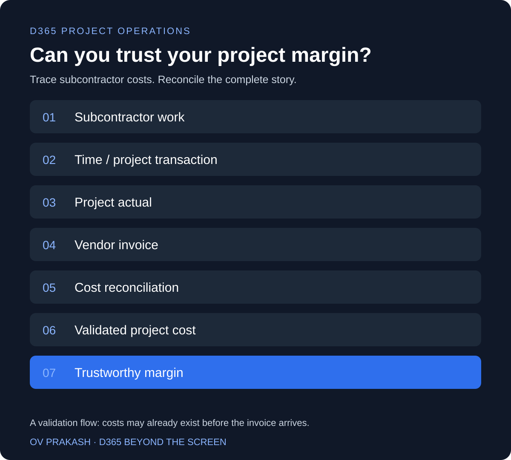

This is one of those Project Operations topics that looks like a Finance problem—until it starts affecting the Project Manager's margin.
Imagine external consultants working through a subcontractor. The work is completed, the customer is being billed and the project dashboard still shows a healthy margin. But the subcontractor invoice has not been correctly reconciled with the corresponding Project Operations Actuals.
An unmatched invoice does not automatically mean that no cost has been recorded. Approved subcontractor activity may already have generated cost actuals. The question is whether the reported costs are complete, correctly valued and reconciled, without omissions or duplication.
Why invoice matching matters
Microsoft describes a capability for matching subcontractor vendor invoices to actuals in Project Operations integrated with ERP. It connects invoice review with the underlying subcontracting transactions, helping teams investigate differences and trace costs.
The Microsoft release plan lists September 2026 for general availability. A planned date does not establish availability in every environment; confirm the applicable version and feature settings before testing.
Follow the business chain
This is a business validation flow, not a promise that all deployments post transactions in this exact sequence. Costs can exist before an invoice arrives. Matching and subsequent processing must explain how those original costs relate to the invoiced amounts.
Microsoft's subcontract purchase order documentation describes matching actuals on vendor invoice lines and subsequent reversal and replacement of original actuals during processing. Validate the resulting records rather than assuming that posting the invoice simply adds another cost.
The implementation lesson
When testing subcontracting in an ERP project, do not stop at “Was the vendor invoice posted successfully?”
- Did the cost reach the correct project and task?
- Did it reconcile with the expected actuals, quantities and rates?
- Were original and replacement costs handled without double counting?
- Did project profitability change correctly for the reporting period?
- Can Finance trace the transaction?
- Can the Project Manager explain the margin?
Make reconciliation a shared test
Choose a known subcontractor, project and period. Agree the expected work quantity, cost rate and invoice amount before processing. Compare recorded activity, actuals, invoice lines and the final report together.
Include partial invoices, a rate difference, delayed time approval and a correction. For each scenario, record the expected cost and investigate any difference. Decide who owns unresolved items and when they must be cleared before management relies on the report.
Posting an invoice and understanding its project impact are two different things. Good ERP implementation moves beyond transaction testing toward business-outcome testing.
How does your organization reconcile subcontractor costs back to project profitability?
Continue reading: Your Project Is Profitable in D365. But Is the Margin Actually Correct?
Share your perspective
How do you reconcile subcontractor costs? Send your comment privately to OV Prakash by email. Comments are not published on this page.